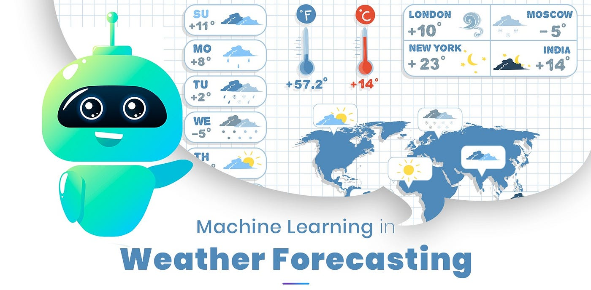

Weather Prediction Using ML
This project leverages Machine Learning to predict weather conditions based on historical data. By analyzing temperature, humidity, pressure, and other meteorological parameters, the model provides accurate forecasts to assist users in planning their activities.
Key Features
- Data-Driven Predictions: Uses historical weather data to generate future forecasts.
- Multiple Parameters: Analyzes temperature, humidity, wind speed, and atmospheric pressure.
- Machine Learning Model: Implements algorithms like Linear Regression, Decision Trees, or Neural Networks.
- Real-Time Data Integration: Can be extended to integrate with live weather APIs.
- User-Friendly Interface: Presents data in an easy-to-understand graphical format.
Working Principle
- Collect historical weather data from various sources.
- Train a Machine Learning model using supervised learning techniques.
- Input real-time data to predict upcoming weather conditions.
- Display forecasts with a user-friendly dashboard or web app.
Gallery

Back to Home